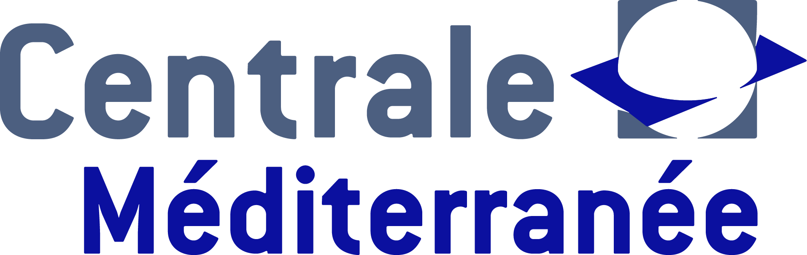
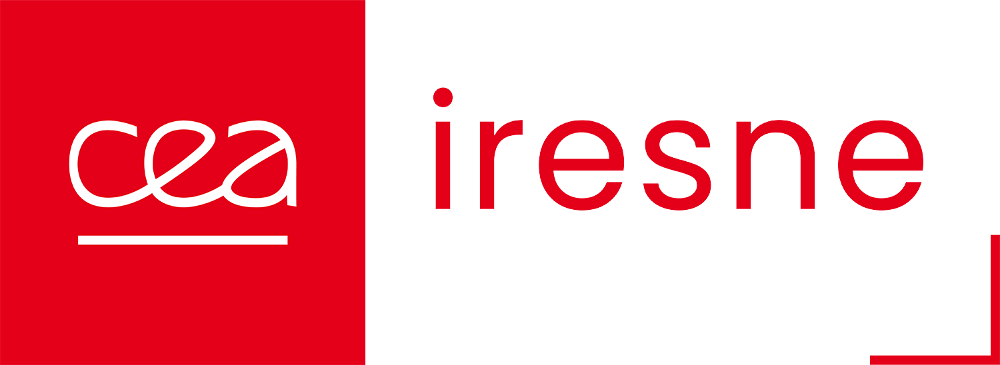

Diplômé ingénieur de l'École Centrale Méditerranée en 2026, je me suis spécialisé en 3e année dans la filière MECA-FETES (Fluides pour l'Énergie, les Transports, l'Environnement et la Santé). J'ai réalisé mon cursus en alternance au CEA Cadarache, au sein du laboratoire LEPC, où j'ai fiabilisé puis qualifié en métrologie des cassettes de mesure destinées à l'examen non destructif de combustibles irradiés.
Curieux et attiré par la recherche expérimentale, j'ai effectué un stage de 4 mois à la University of Queensland (Australie) sur les matériaux supraconducteurs, et j'ai mené plusieurs projets en aérodynamique, acoustique et instrumentation durant mon cursus. Je recherche des missions concrètes, au plus près du terrain, qui associent conception mécanique et gestion de projet.
Fluides pour l'Énergie, les Transports, l'Environnement et la Santé. Aérodynamique, turbulence, écoulements diphasiques et géophysiques, méthodes numériques et expérimentales, dispersion des polluants, énergies renouvelables.
Transferts thermiques, génie des procédés, finance, électronique, sciences humaines et sociales.
Physique, mécanique des fluides, informatique, économie, chimie, mathématiques.
Baccalauréat spécialité Maths-Physique-SI, mention bien.
Une sélection de projets menés en formation, en alternance et à l'international — de la mécanique en environnement nucléaire à l'aérodynamique expérimentale.
De la reprise mécanique à la campagne d'essais métrologiques de deux cassettes pour le banc MEGAFOX, en cellule de haute activité.
Voir le projet Stage recherche · 2025Mesure de courant critique, lévitation magnétique et analyse microstructurale SEM/EDS.
Voir le projet Projet FETES 3A · 2025—2026Conception d'un silencieux rectangulaire pour l'atténuation sonore et la dépollution en particules fines.
Voir le projet Projet 3A · 2025—2026Vérification numérique de la linéarité de portance par méthode des panneaux.
Voir le projet Projet innovation · 2024—2025Conception et automatisation d'un prototype de scanner 3D pour le FabLab Marseille.
Voir le projet Travaux pratiques 3AInstabilité de Rayleigh, soufflerie Eiffel, méthode ALE, écoulements géophysiques.
Voir les travauxOuvert aux opportunités en ingénierie mécanique, gestion de projet et missions de terrain.